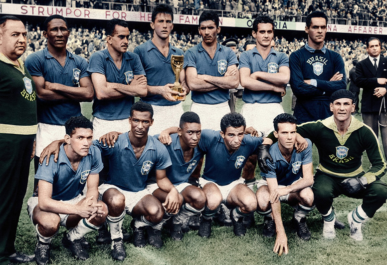
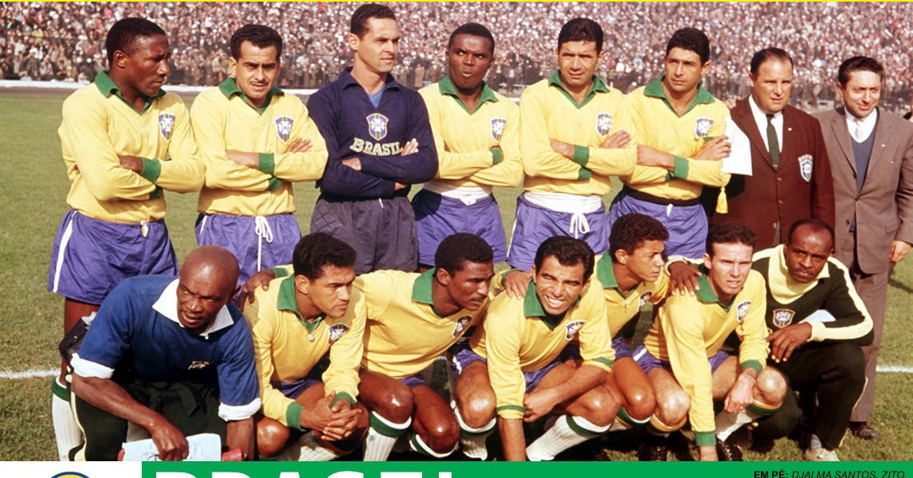
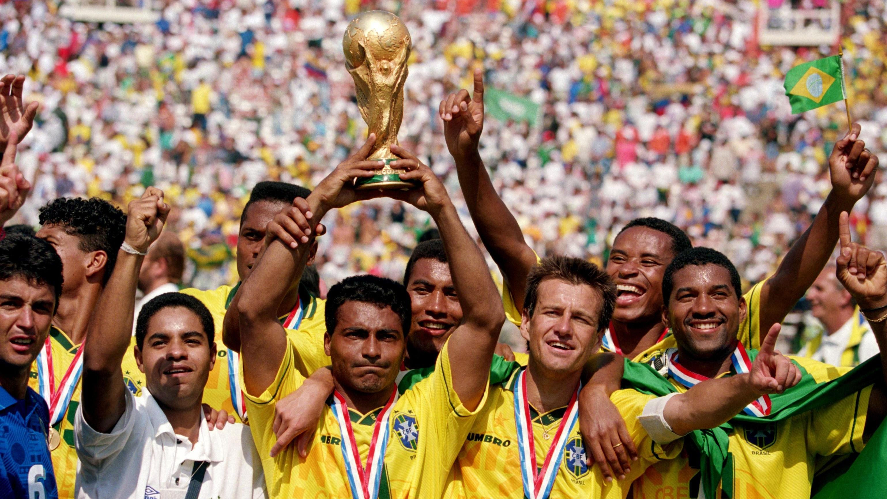
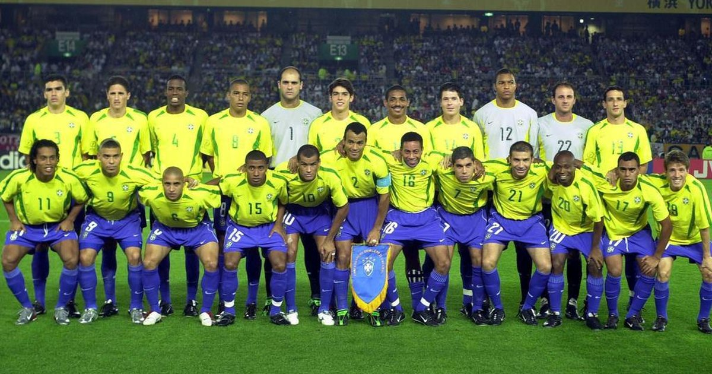

Títulos do Brasil nas Copas do Mundo
- Breve Resumo
- O Brasil é o país com mais títulos na história das Copas do Mundo, com cinco conquistas. A Seleção Brasileira é conhecida como "Pentacampeã" e tem uma rica história de sucesso no maior torneio de futebol do mundo.
Voltar ao Início
Copa do Mundo 1958: A Revolução Tática e o Nascimento de um Rei

Após o trauma do Maracanazo em 1950 e a derrota na "Batalha de Berna" em 1954, o Brasil estruturou uma preparação profissional inédita, levando psicólogos, dentistas e médicos para a Suécia.
- O Contexto Tático: O técnico Vicente Feola implementou o 4-2-4, um sistema que oferecia equilíbrio defensivo e poder ofensivo devastador. A inovação permitiu que Nilton Santos e Djalma Santos atacassem pelos lados, algo raro na época.
- A Ascensão de Pelé e Garrincha: Ambos começaram no banco. Entraram apenas no terceiro jogo, contra a URSS. Nos primeiros três minutos desse jogo, Garrincha deu um "baile" na defesa soviética, no que o jornalista Gabriel Hanot chamou de "os três minutos mais incríveis do futebol".
- O Impacto Cultural: A vitória de 1958 não apenas estabeleceu o Brasil como potência mundial, mas também transformou o futebol em um fenômeno cultural, inspirando gerações e consolidando a identidade nacional.
- A Final Histórica: O Brasil saiu perdendo para a Suécia, mas reagiu com calma. O destaque foi o gol de Pelé, onde ele aplicou um lençol no defensor dentro da área e finalizou de primeira. Aos 17 anos, ele saiu de campo chorando nos ombros do goleiro Gilmar.
- Legado: O Brasil quebrou o tabu de que "sul-americanos não venciam na Europa" e apresentou ao mundo o conceito de Ginga.
Copa do Mundo 1962: A Copa de "Mané" Garrincha

O Brasil chegou ao Chile com a base de 1958, mas mais envelhecida. O plano era girar em torno de Pelé, mas o destino mudou os planos logo na fase de grupos.
- O Drama de Pelé: No segundo jogo, contra a Tchecoslováquia, Pelé sofreu uma distensão muscular. Sem as substituições (que não existiam na época), o Brasil temeu o pior. Entrou em cena Amarildo, o "Possesso", que assumiu a camisa 10 com personalidade.
- O Protagonismo de Garrincha: Com Pelé fora, Garrincha viveu seu ápice. Ele marcou de cabeça, de pé esquerdo e de perna direita. Nas quartas de final contra a Inglaterra e na semi contra o Chile, ele foi imparável. Os jornais chilenos perguntavam: "De que planeta vem Garrincha?".
- A Final e a Superação: O Brasil reencontrou a Tchecoslováquia. O goleiro tcheco Schrojf, eleito o melhor do torneio, falhou nos gols brasileiros de Amarildo e Zito. Vavá fechou o placar, tornando-se o primeiro jogador a marcar em duas finais de Copa diferentes.
- Curiosidade: Garrincha foi expulso na semifinal, mas uma manobra de bastidores (e o sumiço do bandeirinha que o denunciou) permitiu que ele jogasse a final mesmo com febre.
Copa do Mundo 1970: A Perfeição do Futebol-Arte

Muitos especialistas consideram este o ápice técnico da história do esporte. O Brasil reuniu "cinco camisas 10" (Pelé, Gérson, Tostão, Jairzinho e Rivelino) no mesmo time titular.
- A Preparação Física: O Brasil utilizou métodos da NASA para aclimatação à altitude mexicana. O time voava fisicamente enquanto os adversários cansavam no segundo tempo.
- O Caminho de Ouro: O Brasil venceu todos os jogos. O confronto contra a Inglaterra (então campeã) na fase de grupos foi uma final antecipada, marcada pela defesa milagrosa de Gordon Banks em cabeçada de Pelé e pelo gol de Jairzinho.
- Jairzinho, o Furacão: Ele estabeleceu um recorde que dura até hoje: marcou gols em todos os seis jogos da Copa do Mundo.
- A Final no Estádio Azteca: Contra a Itália, o Brasil deu uma aula de posse de bola. O gol de Carlos Alberto Torres, o quarto da final, envolveu quase todo o time e simbolizou o futebol coletivo perfeito. Pelé conquistou seu terceiro título, tornando-se o único jogador da história a alcançar tal feito.
Copa do Mundo 1994: O Triunfo do Pragmatismo e de Romário

O Brasil vivia um jejum de 24 anos. O time de Parreira era criticado por ser "defensivo demais" e não ter o brilho de 1982, mas era extremamente eficiente.
- A Dupla Bebeto e Romário: O entendimento entre os dois foi telepático. Romário foi o "dono" da Copa, decidindo jogos truncados contra Suécia e Holanda. O "embala neném" de Bebeto contra a Holanda tornou-se uma das celebrações mais famosas da história.
- O Sistema de Segurança: A dupla de volantes Mauro Silva e Dunga protegia a zaga de forma impecável. O Brasil sofreu apenas 3 gols em 7 jogos.
- A Final dos Nervos: Sob um sol escaldante em Pasadena, Brasil e Itália empataram em 0 a 0. Pela primeira vez, o título seria decidido nos pênaltis. Baresi e Massaro erraram pela Itália; Márcio Santos errou pelo Brasil. No último chute, o craque Roberto Baggio mandou por cima do travessão.
- Significado: A vitória foi dedicada a Ayrton Senna, que havia falecido meses antes, unindo o país em um sentimento de resgate do orgulho nacional.
Copa do Mundo 2002: A Família Scolari e a Volta por Cima

O Brasil quase não se classificou nas Eliminatórias. Ninguém acreditava no título, e a imprensa pressionava pela convocação de Romário, que o técnico Luiz Felipe Scolari ignorou.
- A Recuperação de Ronaldo: O "Fenômeno" vinha de dois anos parado por lesões devastadoras no joelho. Ele chegou sob desconfiança, mas terminou como artilheiro isolado com 8 gols, incluindo os dois da final.
- O Esquema 3-5-2: Felipão montou uma defesa sólida com três zagueiros (Lúcio, Roque Júnior e Edmílson), liberando os alas Cafu e Roberto Carlos para atacarem constantemente. No meio, Rivaldo e Ronaldinho Gaúcho criavam a magia.
- O Jogo Chave: Contra a Inglaterra, nas quartas, Ronaldinho Gaúcho fez um gol de falta antológico encobrindo o goleiro Seaman e foi expulso logo depois. O Brasil segurou o resultado com um a menos, provando sua força mental.
- A Final contra a Alemanha: Foi o primeiro confronto entre as duas potências em Copas. Oliver Kahn era o melhor goleiro do mundo, mas falhou em um chute de Rivaldo, permitindo o rebote de Ronaldo. O Fenômeno ainda faria mais um, selando o Penta.
- Curiosidade: O capitão Cafu quebrou o protocolo ao subir no pedestal para erguer a taça e escreveu "100% Jardim Irene" em sua camisa, homenageando seu bairro de origem.